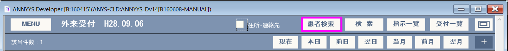
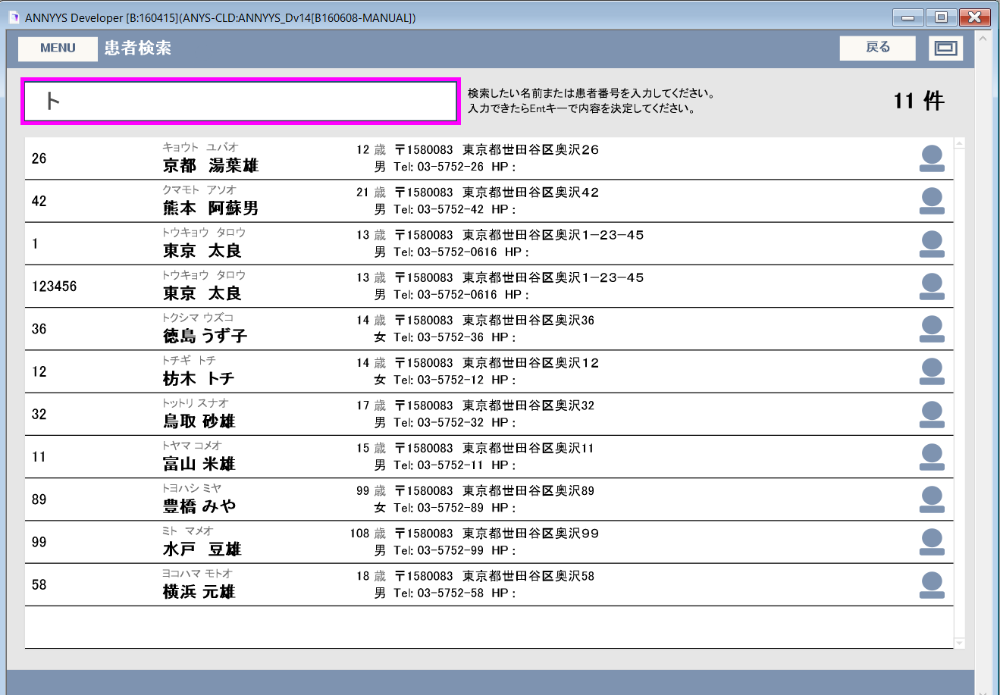
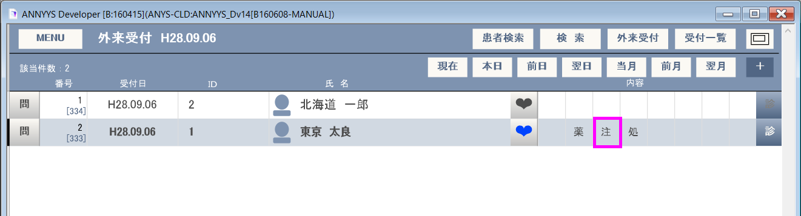
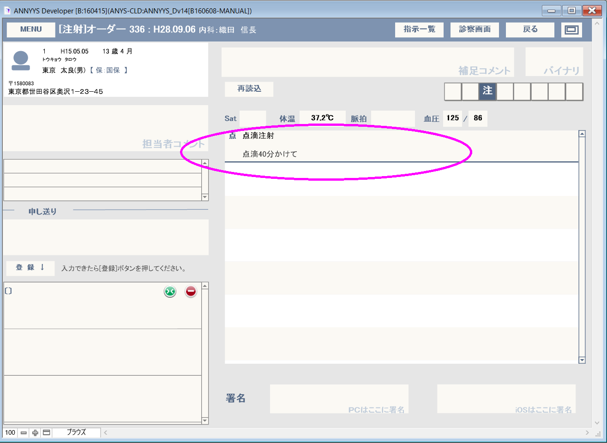
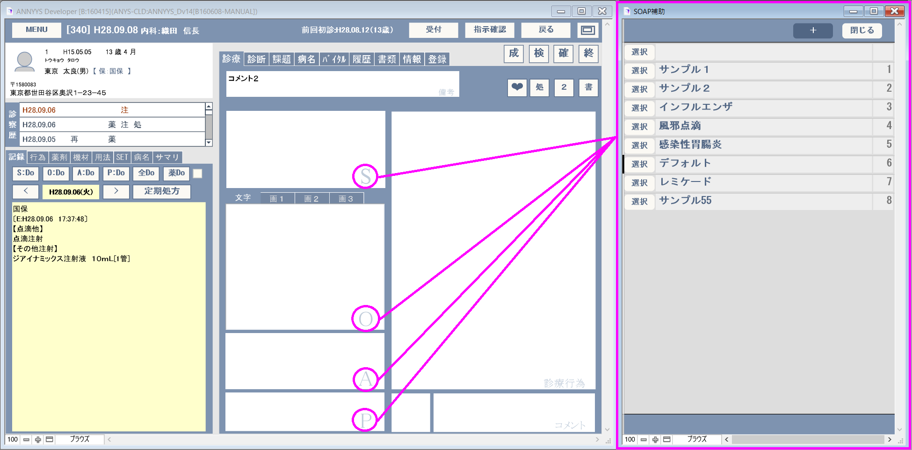
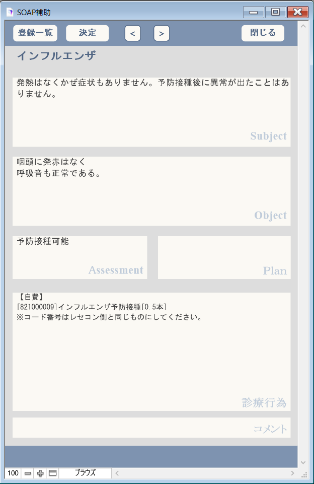
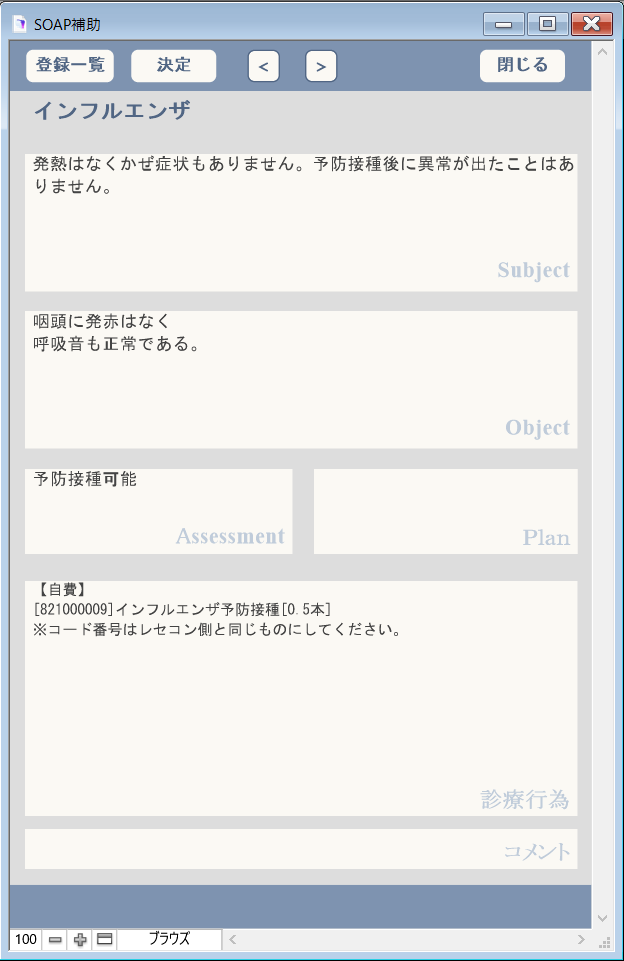

来院受付
ANNYYS_Dでは来院毎に受付を処理を行います。受付を行った際に受付番号が発行され、患者ID、日付け、受付番号の3つのキーで受診内容を区別します。午前と午後など同じ日に2回受診するような場合は2回受付処理を行います。受付画面には#L[メインメニュー]#B[外来受付]で受付画面へ移動します。
受付処理
#B[+]を押すと新しいレコードが表示されます。
患者ＩＤを入力しentキーを押します。

該当患者名が表示されればこれで受付は完了です。
診療科、医師、診療内容、受付時間等適宜変更してください。
もし、登録済みの患者で診察カードが無いような場合は#B[患者検索]ボタンを押せば、名前（漢字・カナ）で患者検索ができます。

検索で表示されたリストの名前・年齢・性別・住所などで本人であることが確認できれば、該当リストをクリックして受付処理を完了させることもできます。

※検索速度は登録患者数のデータ量によって変わります。概ね１万件程度まではストレスなく動作可能と推測されます。
患者情報の読み込み
受付処理をしても患者情報が登録されていない場合は患者名は表示されません。このような場合新たに患者登録が必要ですが、ORCAと連携している場合は簡単に取り込むことが可能です。
患者ＩＤを入力し何も出てこないので  ボタンを押して患者情報画面を表示します。
ボタンを押して患者情報画面を表示します。
患者情報画面右上にある#B[確認]を押すと日レセに登録のある患者情報が読み込まれます。
#B[戻る]で受付リストに戻ると、登録できた患者名が表示されています。

ORCAの設定確認は、メインメニューから基本設定に切り替えて、ORCAタブをクリックしてください。
接続確認ボタンにて、秒数が進む事を確認出来れば、通信されているとの事です。

バイタルの記録
受付リスト上にある#B[♥]で当日のバイタルでーたの記録が行えます。
バイタルボタンは診察画面と受付画面で２ヶ所から、操作が可能です。


記録されたバイタルデータは診察画面の中ほどに表示されています。
#T[バイタル]から内容を変更することもできます。
WindowsのタスクスケジューラーやMacOSではcronコマンドなどを使えば定期的に処理が行え手間がかかりません。
受付リストの状態

受付リストでは、行中ほどに表示される「空欄」「会計待ち」「会計済み」で受付済み患者の現在の状態を把握できます。
受付した時点では「空欄」で、まだ何も進行していない状態を表します。
医師が診察を終了した時点で「会計待ち」となり、会計処理が行える事を表示しています。
会計が終了したものは「会計済み」となり、会計終了時間などが日レセより取り込まれます。（#B[本日]を押したときに読み込みます。）
受付一覧
#B[受付一覧]では受付リストを簡素化し一度に多くの行を見る事ができるリストです。こちらでも状態が確認できます。

指示一覧
#B[指示一覧]は処置室などで来院患者の診察状況を確認するための画面です。患者ごとに注射・処置・検査などが登録された内容がオンタイムで表示されるようになっています。

表示された内容は、例えば[注]（注射）があった場合はそこをクリックすると指示内容として内容を確認することができます。

受付内容のチェクボックス

基本の受付画面には診察内容をさらに細かく判断できるようチェックする部分が設けられています。デフォルトではサンプルデータが入っていますが、この内容は自由に変更できます。
この部分の値が設定されている部分はEX_SOAPファイルの値一覧項目で、簡単に編集することができます。
EX_SOAPファイルそものは、カルテ記録そのものをテンプレート化して定型的な診察内容の入力を簡単するために利用する機能拡張ファイルです。
オリジナルの値一覧などは全てこのファイルに保管されています。
編集方法は次の通りです。
 
